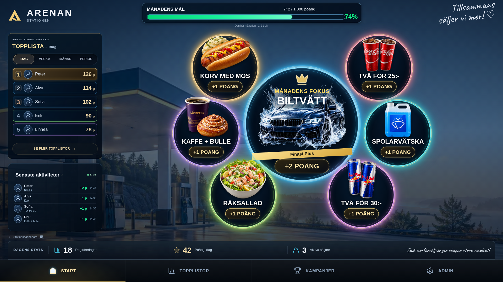
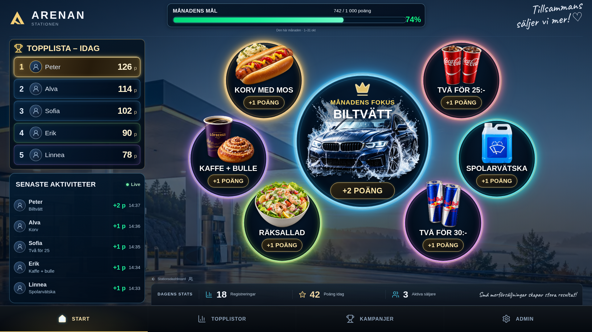

Riktiga screenshots från den lokala React/CSS-implementationen med samma demodata, normalt idle-läge och hela viewporten. Välj format för att jämföra kompositionen före och efter. Öppna originalet för pixelgranskning.


Desktop och 4:3: fem dagliga topprader, fem senaste aktiviteter, vänsterkolumn ned till menyraden och statsbar endast över arenaytan. Mobil: samma visuella språk med listor i paneler. Fokus: ingen extra produktetikett och lägre placerad bil. Befintliga bakgrunds- och produktbilder samt profilreservbilder skiljer sig fortfarande från mockupen.